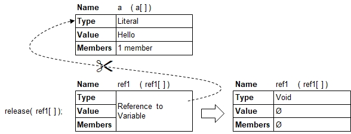

Introduction
Following methods are available to release references:
- Function call release(): Specify references to variables directly. Example: release ( ref1[ ], ref2[ ], ref3[ ] );
- Function call release all(): All locally defined references to variables will be released. When called from the main program (neither function nor other program called), then all globally defined references will be released.
- Function call release all(): Specify references to variables directly, or variables which contain one or more members / sub-members which are references to variables. All of them will be released.
- Exiting a user-defined procedure or function, or a B4P program called wiht start() or include(): All locally defined references to variables will be released.
- Redirecting references: The original reference will be leased and moved to a different variable.

Note: Please note that the target variables remain unaffected while releasing the references. Once all references on a target variable are released, then the target variable may be deleted.
Released references will not be deleted but mutate to simple variables containing void values.
a[] = Hello;
ref1[] =^ a[];
echo( ref1[] );
release( ref1[] );
echo( ref1[] );Hello
# Invalid Value #